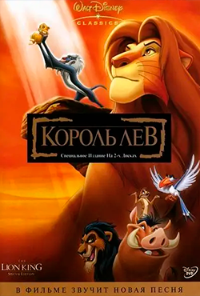
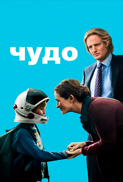

Рекомендуемые фильмы
1+1
Фильм о дружбе и взаимопомощи.

Фильм о дружбе и взаимопомощи.
Гарри Поттер
История о добре, смелости и дружбе.

История о добре, смелости и дружбе.
Король Лев
Фильм о ответственности и семье.
Фильм о ответственности и семье.

ВАЛЛ-И
Показывает проблему экологии.

Показывает проблему экологии.
Чудо
Учит уважению к людям.
Учит уважению к людям.
